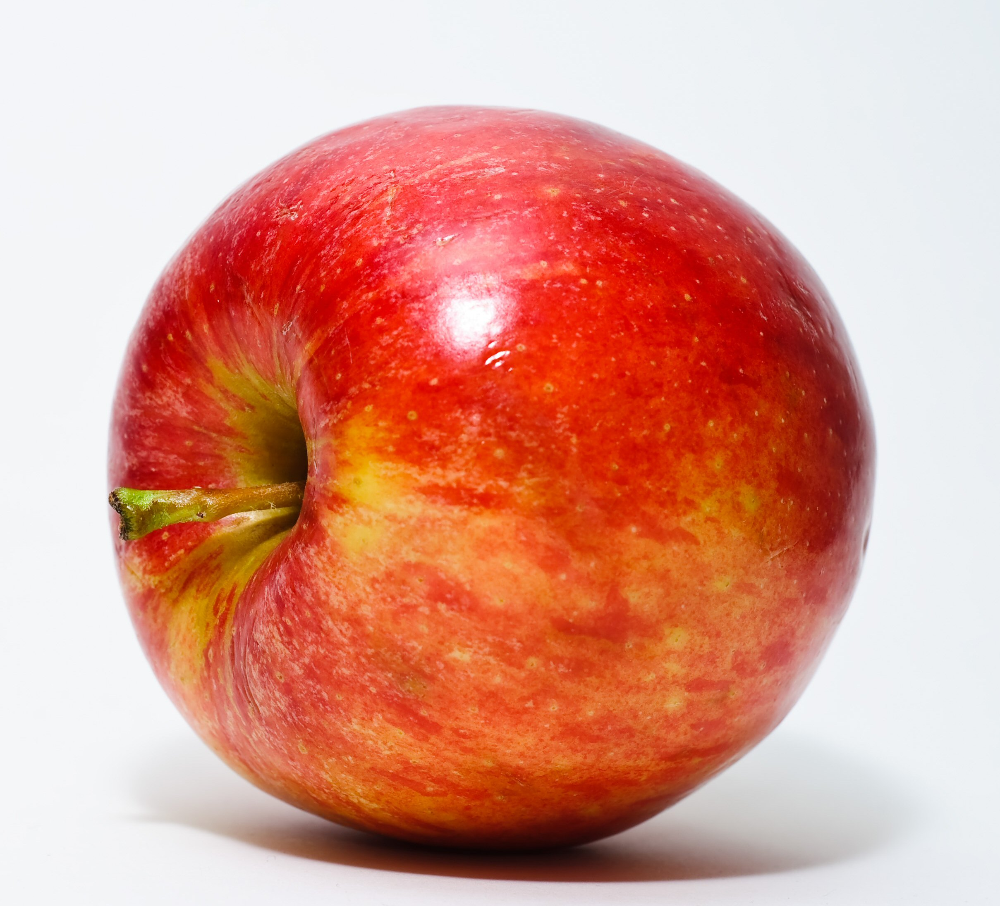
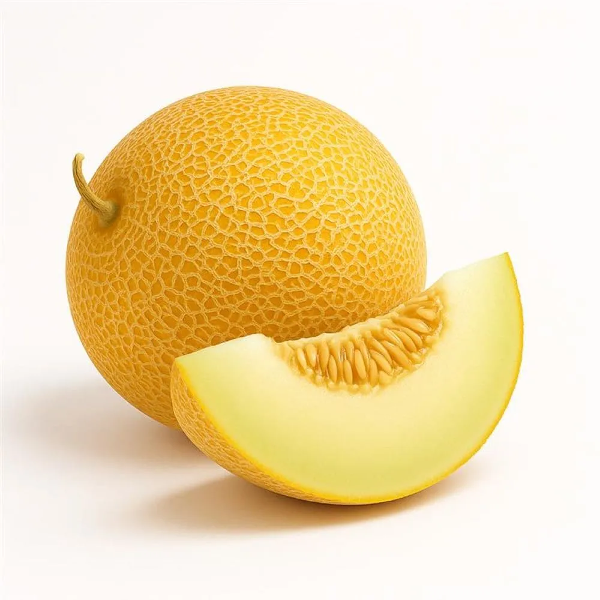
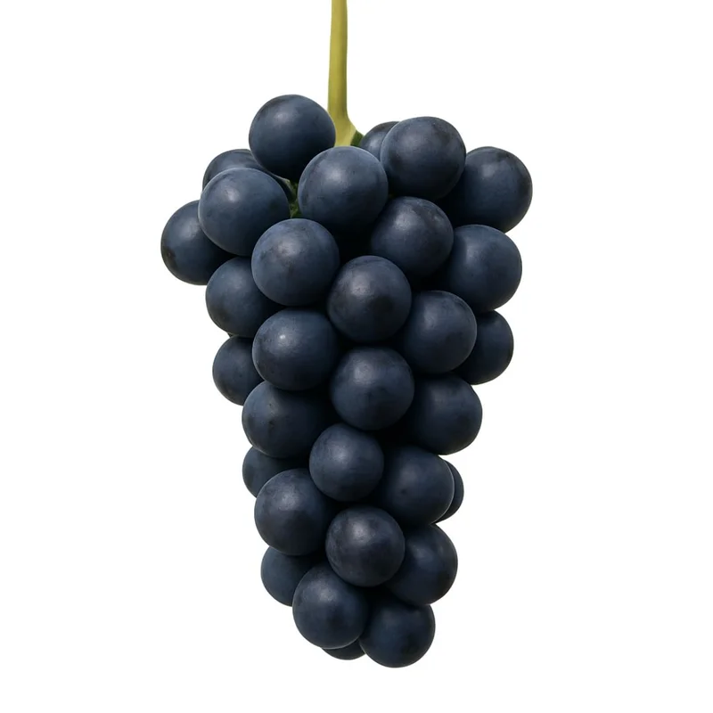
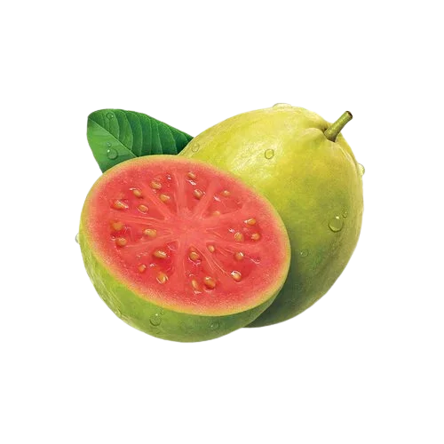
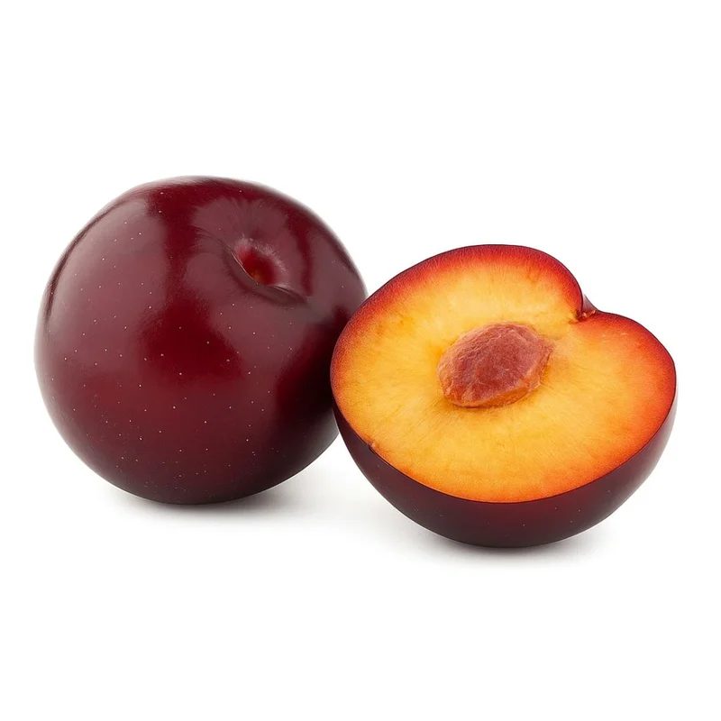
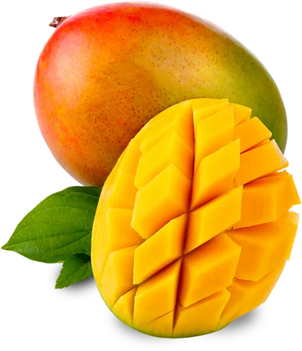
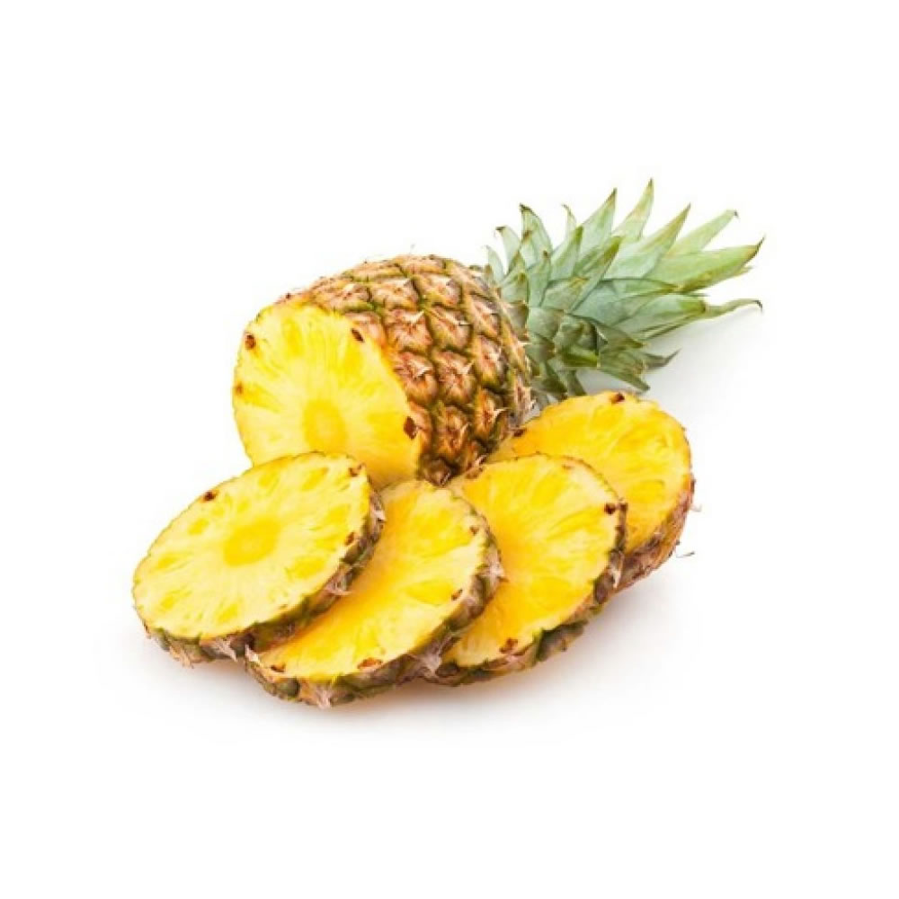
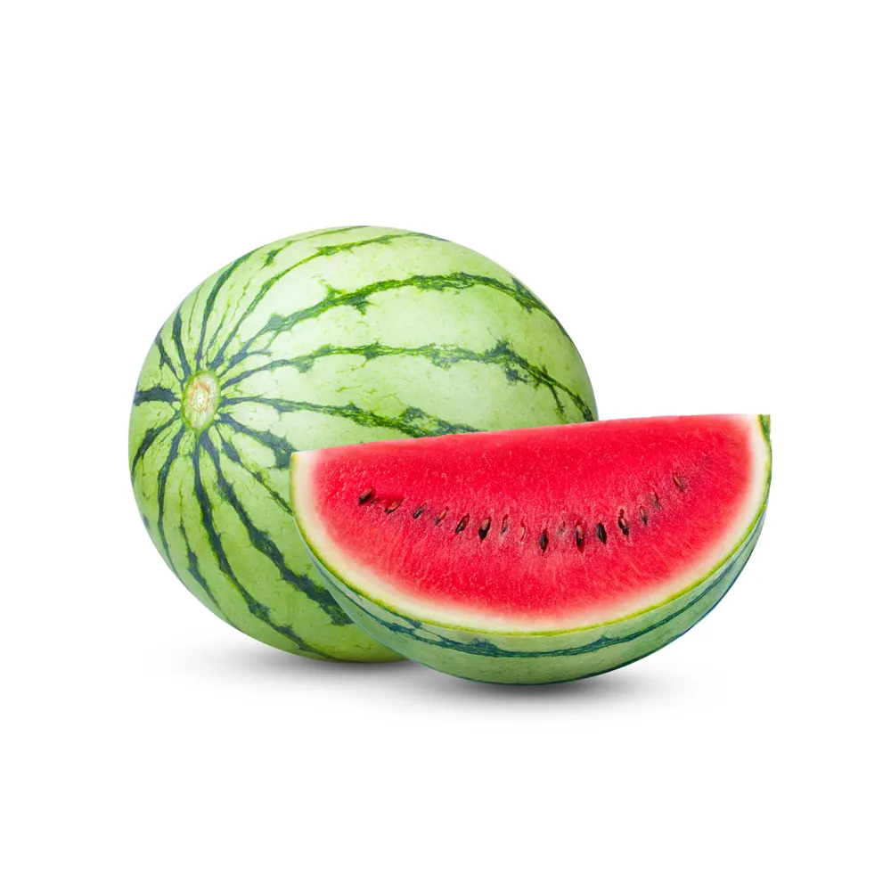

Top 10 Frutas
10. Maçã

A maçã é o pseudofruto pomáceo da macieira (Malus domestica), árvore da família Rosaceae.
9. Melão

Melão (Cucumis melo L.) é uma fruta provavelmente nativa do Oriente Médio.
8. Uva

A uva é o fruto da videira (nome científico: Vitis sp.), uma planta da família das Vitaceae.
7. Goiaba

Goiaba é o fruto da goiabeira, árvore da espécie Psidium guajava, da família Myrtaceae, originária da América tropical.
6. Ameixa

A ameixa é uma fruta de algumas espécies de Prunus subg. Prunus.
5. Manga

A manga é o fruto da mangueira (Mangifera indica L.), árvore frutífera da família Anacardiaceae.
4. Abacaxi

O abacaxi (Ananas comosus) é uma infrutescência tropical produzida pela planta de mesmo nome.
3. Melancia

Melancia (Citrullus lanatus) é uma planta da família Cucurbitaceae e também o nome do seu fruto.
2. Kiwi

Actinidia deliciosa, conhecido como quiuí, quivi ou kiwi é uma espécie de planta frutífera, originária do sul da China.
1. Morango

Morango (Fragaria × ananassa) é considerado, na linguagem vulgar, como o fruto vermelho do morangueiro, da família das rosáceas.